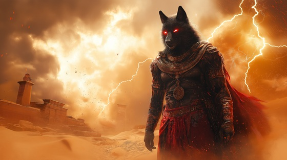

Enter the desert storm — a place where no order survives, and the gods themselves tremble. “Seth – Born of Storm and Sand” is a ferocious metal onslaught that embodies the wrath and wild power of Seth (Set), the Egyptian god of chaos, war, and the desert. Raw, primal, and unrelenting.
Who is Seth?
Seth (or Set) is one of the most feared and misunderstood gods in the Egyptian pantheon. He is the god of chaos, storms, destruction, and rebellion. Known for murdering his brother Osiris to seize the throne, he was later defeated by Horus, yet never fully destroyed.
He symbolizes the necessary chaos within the universe—the force of opposition, destruction, and fierce independence. In later myths, Seth is both demonized and revered, even helping Ra battle the serpent Apophis each night in Duat.
Seth: Born of Storm and Sand
From desert winds and broken flame
I rose to strike the sky with shame
A god unchained, the scar of law
Where order fears what chaos saw
My breath is fire, my voice a knife
I tore through peace, I cursed all life
They called me traitor, crowned me beast
But I am storm, I am the feast
Beneath the sand, the thunder grows
Where blood was spilled, my fury flows
I am Seth — the storm-born flame
The twisted god they dare not name
I am the howl across the waste
The fang, the flood, the god disgraced
Born of storm and sand and war
I break the gates they kneel before
Osiris knelt, but I stood tall
I broke the king, I watched him fall
They cry for order, love, and peace
But from their rules, I found release
No throne is pure without a fight
No day is born without the night
Let gods deny me, let them burn
For from the ash, I will return
Beneath the sand, the thunder grows
Where blood was spilled, my fury flows
I am Seth — the storm-born flame
The twisted god they dare not name
I am the howl across the waste
The fang, the flood, the god disgraced
Born of storm and sand and war
I break the gates they kneel before
The scorpion rides upon my brow
The jackal's cry, the lion’s vow
The desert walks where I command
And chaos bends beneath my hand
I wear the wind, I speak the flame
I carve rebellion into name
I kill the lie, I break the chain
And through the dark, I still remain
Beneath the sand, the thunder grows
Where blood was spilled, my fury flows
I am Seth — the storm-born flame
The twisted god they dare not name
I am the howl across the waste
The fang, the flood, the god disgraced
Born of storm and sand and war
I break the gates they kneel before
Let gods deny what they have made
I am the force they can’t contain
Through serpent, storm, and sacred hate
I wield the blade that splits their fate
In every wind that screams defiance
In every war without alliance
I am Seth — I do not kneel
I am the storm you learn to feel